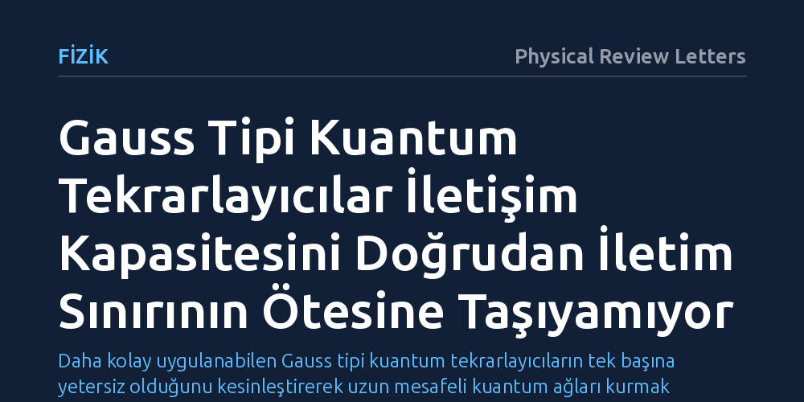

FIZIK · Physical Review Letters · 2026-10-24
Araştırmacılar, optik kanallardaki foton kaybını aşmak için deneysel olarak daha kolay olan Gauss tipi kuantum tekrarlayıcıların iletişim kapasitesini artırıp artıramayacağını inceledi. Elde edilen matematiksel kanıt, bu tekrarlayıcıların ve homodin ölçümlerin kuantum iletim kapasitesini doğrudan iletim sınırının üzerine çıkaramayacağını gösterdi.
Daha kolay uygulanabilen Gauss tipi kuantum tekrarlayıcıların tek başına yetersiz olduğunu kesinleştirerek uzun mesafeli kuantum ağları kurmak için daha karmaşık Gauss-dışı teknolojilere odaklanılması gerektiğini ortaya koyuyor.

Kuantum iletişimi, bilginin kuantum durumları üzerinde kodlanarak dinlenmesi veya kopyalanması teorik olarak imkânsız olan güvenli ağlar kurulmasını hedefler. Ancak bu sistemler optik fiber kablolar veya serbest hava kanalları üzerinden ışık parçacıkları (fotonlar) ile iletildiğinde, mesafe uzadıkça kaçınılmaz bir fiziksel engelle karşılaşır: foton kaybı. Klasik telekomünikasyonda zayıflayan ışık sinyalleri optik yükselticilerle kolayca güçlendirilebilirken, kuantum mekaniğinin temel kuralı olan 'kopyalanamazlık ilkesi' bilinmeyen bir kuantum durumunun kusursuz kopyalanmasını yasaklar. Bu nedenle uzun mesafelerde kaybolan fotonları telafi etmek kuantum internetinin önündeki en büyük teknik darboğazdır.
Fizikçiler bu sorunu aşmak amacıyla hat boyunca belirli aralıklarla yerleştirilen 'kuantum tekrarlayıcı' adı verilen ara istasyonlar önerdiler. Bu tekrarlayıcılar, uzun bir hattı daha kısa parçalara bölerek her parçada kuantum dolanıklığı kurar ve ardından bu parçaları birbirine bağlar. Ne var ki standart kuantum tekrarlayıcı protokolleri, laboratuvar ortamında üretilmesi ve kontrol edilmesi son derece zor olan 'Gauss-dışı' kuantum durumları ve karmaşık ölçümler gerektirir. Bu durum, bilim insanlarını çok daha pratik bir soruya yöneltti: Acaba laboratuvarda lazerler, ışın bölücüler ve homodin algılayıcılarla kolayca kontrol edilebilen standart 'Gauss tipi' işlemler kullanılarak güvenilir bir kuantum tekrarlayıcı ağı kurulabilir mi?
Araştırmacılar bu sorunun cevabını laboratuvarda fiziksel bir devre kurarak ya da bilgisayar simülasyonları yaparak aramadı; çünkü deneysel bir başarı veya başarısızlık teorik sınırları kesin olarak çizemezdi. Bunun yerine kuantum bilgi kuramının matematiksel temellerine inerek analitik bir ispat geliştirdiler. İspatın merkezinde, kuantum durumlarının klasik olarak ne kadar taklit edilebilir olduğunu test eden ve dolanıklık sınırlarını belirleyen 'k-genişletilebilirlik' (k-extendibility) kavramı yer alıyordu.
Yazarlar, bu kuramsal aracı sürekli değişkenli kuantum sistemlerine uyarlamak için Gauss kuantum durumlarına özgü 'kesirli genişletilebilirlik' adını verdikleri yeni bir matematiksel çerçeve türettiler. Bu yöntem, fotonların çevreye dağılarak kaybolduğu 'saf kayıplı bozonik sönümleme kanallarını' ve aralarındaki tüm olası kuantum durum dönüşümlerini kesin sınırlara tabi tutmayı mümkün kıldı. Böylece keyfi sayıda tekrarlayıcı düğümü içeren karmaşık ağ yapılarının iletim kapasiteleri eksiksiz bir biçimde modellendi.
Elde edilen analiz, fizikte kesin bir yasaklama bildiren bir 'olmazlık teoremi' (no-go theorem) ile sonuçlandı. Kanıtlanan teoreme göre, yalnızca Gauss tipi operasyonlardan, homodin ölçümlerden ve sınırsız klasik bilgi iletişiminden oluşan bir kuantum tekrarlayıcı zinciri, iletim kanalının kuantum kapasitesini veya gizli iletişim kapasitesini doğrudan iletim seviyesinin ötesine kesinlikle taşıyamıyor.
Üstelik bu kısıtlama yalnızca tek yönlü sinyal iletimiyle de sınırlı kalmıyor. Tekrarlayıcı düğümlerinin kendi aralarında sınırsız biçimde yerel Gauss işlemleri yapmasına ve istedikleri gibi iki yönlü klasik haberleşme yürütmesine izin verilse dahi, iki yönlü kuantum kapasitesi doğrudan iletim sınırını aşamıyor. Başka bir deyişle, araya ne kadar çok Gauss tipi ara düğüm konulursa konulsun, elde edilen performans iki nokta arasına tek bir optik fiber kablo çekip fotonları doğrudan göndermekten daha iyi olamıyor.
Bu bulgu, uzun mesafeli kuantum ağları ve geleceğin kuantum interneti üzerinde çalışan araştırmacılar için son derece kritik ve net bir yol haritası sunuyor. Laboratuvar ortamında kolay üretilebilen Gauss tipi doğrusal optik elemanlarla kestirme bir tekrarlayıcı ağı kurma umudu matematiksel olarak kesin biçimde kapanmış oldu. Böylece araştırmacıların zaman ve kaynaklarını imkânsız bir arayışta tüketmesi engellendi.
Sonuç olarak, çalışan ve foton kayıplarını gerçekten yenebilen bir kuantum tekrarlayıcısı inşa etmek için deneysel olarak daha zorlu olan 'Gauss-dışı' yöntemler (tek foton sayıcılar, foton eksiltme teknikleri ve kuantum hafızalar) zorunlu hale geldi. Bunun yanı sıra, makalede geliştirilen 'kesirli genişletilebilirlik' yöntemi, yalnızca bu negatif sonucu kanıtlamakla kalmayıp gelecekte tasarlanacak daha genel kuantum ağ protokollerinin sınırlarını incelemek için de güçlü bir kuramsal araç kazandırmış oldu.